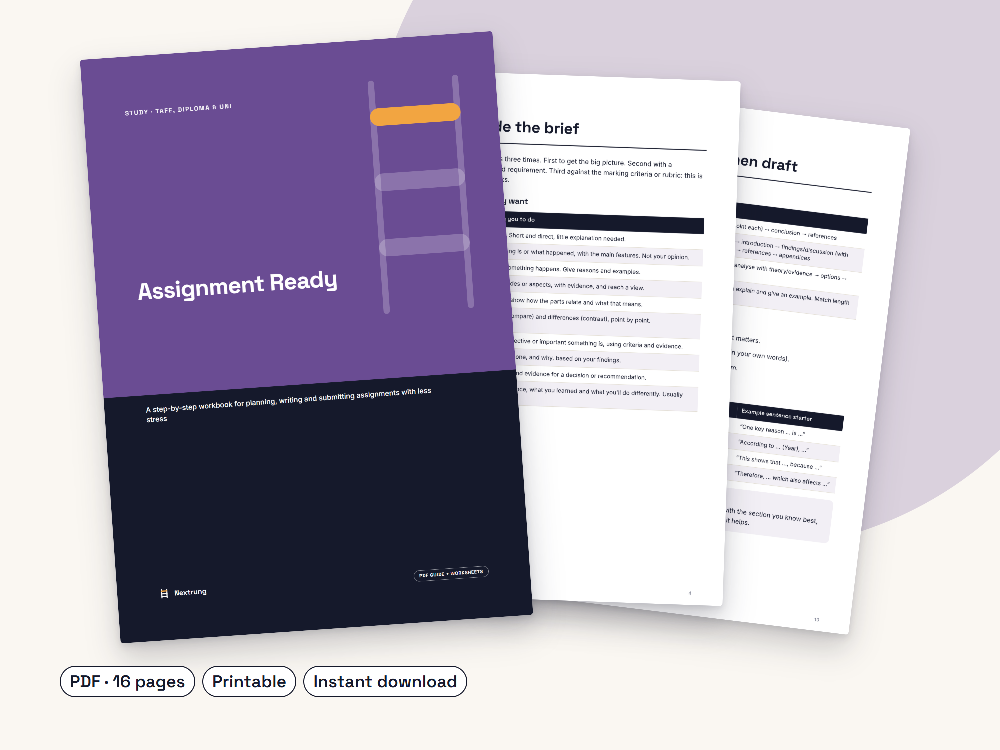

Go from 'where do I even start?' to submitted, one step at a time
Assignment Ready: A step-by-step workbook for planning, writing and submitting assignments with less stress
- A 7-step system with a worksheet for each step
- A task-word decoder so you answer what's actually asked
- Referencing basics and PEEL paragraph planner
- A six-pass editing checklist before you submit
- Clear guidance on academic integrity and AI rules
Launch week: 20% off with code LAUNCH20 at checkout, until Mon 2 Nov, 11:59pm Perth time.
Made for: TAFE, diploma, certificate and first-year uni students, especially adults returning to study and people who work while they study.
See it working
Step 1 is the brief decoder: find the task words (analyse, discuss, evaluate, justify) and what each one asks for. Then the plan-backwards schedule turns your due date into dates for research, drafting and editing.
What's inside
- The 7-step assignment system with time shares for each step
- Task-word decoder (analyse, discuss, evaluate, justify and more)
- Brief decoder worksheet and a plan-backwards schedule
- Source quality check, note-taking method and source tracker
- Referencing basics: in-text vs reference list, quote vs paraphrase (APA/Harvard patterns)
- Structures for essays, reports, case studies and short answers
- PEEL paragraph guide and paragraph planner
- Six-pass editing checklist and final pre-submit check
- Academic integrity and AI tools: how to check your provider's rules
- Feedback-to-action resubmission sheet
- Instant PDF download, A4, printable
Look inside


Most assignment stress comes from not knowing exactly what's being asked, starting too late and having no system. Assignment Ready gives you a simple seven-step system and a worksheet for each step, so you can use it on the assignment in front of you right now.
It covers essays, reports, case studies and short-answer tasks, and it's especially useful for adults returning to study and people who work while they study.
It teaches you how to do your own work well. It explains academic integrity and how to check your provider's rules on AI tools, and it never writes anything for you.
Who it's for
- TAFE, diploma and uni students who work
- Adults returning to study
Is it worth it?
A$15 once, and it works for every assignment after this one. Instant download, prices in AUD. Digital downloads have no change-of-mind refunds; if a guide is faulty or not as described, we'll fix it, replace it or refund you.
Questions
Will this write my assignment?
No. It teaches you a system for doing your own work and explains how to check your provider's academic integrity and AI rules.
Which referencing style does it use?
It shows the general APA 7 and Harvard patterns, and tells you to follow your provider's referencing guide, which always takes priority.
Is it for high school?
It's written for TAFE, diploma, certificate and first-year uni students, but senior high school students may find it useful too.
Does it guarantee better grades?
No product can guarantee grades. It gives you a clear process that many students find reduces stress and helps them hit the marking criteria.
Use it on the assignment that's due next.
Please note: This workbook gives general study-skills guidance. It doesn't replace your education provider's assessment instructions, referencing guide or academic integrity and AI policies, which always take priority. It doesn't guarantee any grade or result. This guide was drafted with the help of AI writing tools, then edited and designed by Nextrung.